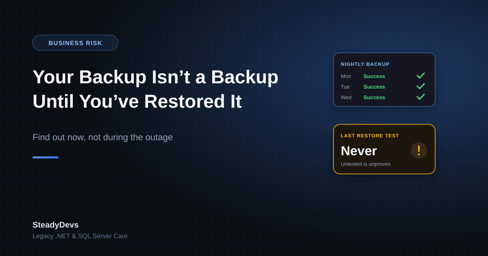

Your Backup Isn't a Backup Until You've Restored It
"Do you have backups?" is one of the first questions we ask when assessing a legacy system. Almost everyone says yes. The follow-up question is the one that changes the mood: "When did you last restore one?"
Long silence, usually. And that silence is the real risk—because an untested backup is a hypothesis, not a safety net. The business believes it's protected, budgets as if it's protected, and takes on risk accordingly. Whether it's actually protected only gets tested on the worst day.
The Ways Backups Silently Fail
Backups rarely fail loudly. They fail in ways nobody notices for months:
The job has been failing since a password changed
A service account password rotated, the scheduled job started failing, the failure email went to a developer who left two years ago. The backup folder still has files in it—from 2024.
It's backing up the wrong thing
The database is backed up, but not the file uploads. Or the application server is imaged, but the database lives on a different machine that nobody added to the schedule. A partial backup restores into a system that doesn't work.
Transaction log backups were never configured
A nightly full backup in a SQL Server database running in full recovery mode means two things: you can lose up to a day of transactions, and your log file has been growing since the day it was set up. Both are usually discovered at the same unpleasant moment.
The backup sits on the same machine as the system
Backups on the same server, or the same physical site, protect you against one type of failure—accidental deletion—and no others. Hardware failure, ransomware, fire and theft take the original and the copy together.
The files are there but can't be read
Corrupt archives, backups from a database version you no longer run, an encrypted file whose key nobody has, or a backup format that needs software licensed to a former employee. The bytes exist. They just aren't usable.
The pattern: every one of these failures is invisible while things are going well, and discovered only when something has already gone wrong. That's why the only meaningful test of a backup is an actual restore.
What a Real Restore Test Looks Like
A restore test isn't checking that the file exists. It's proving that a working system can be rebuilt from what you have, by someone who will be available when it matters.
- Pick a recent backup at random. Not a freshly made one—something from the normal schedule, so you're testing the real process.
- Restore it to separate hardware or a VM. Never over your live system. The point is to prove the backup works, not to risk what's currently running.
- Bring the full system up, not just the database. Application, database, configuration, file storage, integrations pointed at test endpoints.
- Log in and use it. Open a recent record, run a report, create a transaction. A database that restores but an application that won't start is still an outage.
- Check how much data you lost. Compare the newest record in the restored copy against production. That gap is your real recovery point—often much larger than assumed.
- Time the whole thing. From "we've decided to restore" to "staff can work again." That number is your real recovery time, and it's the one to tell management.
- Write down every step and every surprise. The missing password, the undocumented config file, the licence key you had to hunt for. That document is half the value of the exercise.
Do the first restore test with the person who'd actually perform it in a crisis—not your most senior technical person. A restore that only one expert can do is a restore that depends on that expert being reachable at 2am.
Two Numbers Every Owner Should Know
Strip away the technical detail and backup strategy comes down to two business decisions:
- How much data can you afford to lose? If you back up nightly at 11pm and the server dies at 4pm, you've lost a full working day of orders, invoices and payments. Is that survivable? For some businesses yes; for a busy retail or booking operation, absolutely not.
- How long can you afford to be down? Restoring from an offsite archive to newly purchased hardware can take days. Restoring to a standby machine that's already configured can take an hour. The difference is cost, and it's a business decision, not a technical one.
Once those two numbers are stated, the technical work is straightforward. Without them, backup discussions go in circles—because nobody knows what "good enough" means.
A Sensible Baseline for an SME Legacy System
For a typical Malaysian SME running an on-premise .NET application on SQL Server, this is the shape of something defensible without being expensive:
- Nightly full database backups, retained for at least 30 days.
- Transaction log backups every 15–60 minutes if losing a day of work would hurt—this also keeps your log file from growing indefinitely.
- At least one copy offsite or in cloud storage, on a separate account from your day-to-day logins.
- Application files, configuration and any document or image storage included in the schedule, not just the database.
- Automated verification that the backup completed, with failure alerts going to someone who still works at the company.
- A full restore test at least twice a year, documented.
- A written recovery runbook stored somewhere that survives the server being unavailable.
Not Sure Your Backups Would Actually Save You?
We run restore tests and recovery assessments on legacy .NET and SQL Server systems—so you find out now, not during an outage. Straight answers, no scare tactics.
Request an AssessmentThe Ransomware Wrinkle
One thing worth stating plainly: if your backup drive is permanently connected and writable from the server it's backing up, ransomware will encrypt your backups along with everything else. This is now one of the most common ways businesses discover their backup strategy was insufficient.
The defence is straightforward—at least one copy that the production system cannot write to. Offline media rotated regularly, or cloud storage with versioning and separate credentials. It doesn't need to be expensive, but it does need to exist before it's needed.
The Bottom Line
Having backups and being able to recover are different things, and the distance between them is where businesses get hurt. The good news is that finding out costs very little: one restore test, one afternoon, one honest look at how much data you'd lose and how long you'd be down.
If the test goes well, you've bought genuine peace of mind. If it doesn't, you've found out on a quiet afternoon rather than during a crisis—which is the whole point.
Frequently Asked Questions
Twice a year is a reasonable baseline for a stable SME system, plus after any significant change to the server, database version or backup tooling. The first test is the important one—it's where the surprises are.
Hosting providers protect their infrastructure, but the scope and retention of your data backups depend on your plan and configuration—and a provider's backup won't help if data was deleted or corrupted inside your application. Check what's actually covered rather than assuming.
It tells you files were written. It doesn't tell you the files are complete, readable, or sufficient to rebuild a working system. Plenty of successful-looking backups turn out to be missing the file storage, the configuration, or the ability to be read at all.
At least 30 days for daily backups, so you can go back past a problem that wasn't noticed immediately. Monthly archives kept for a year or more are worth having for data-loss issues discovered long after the fact, and for any record-keeping obligations your business has.
An offsite or offline copy that the production server cannot write to. It's the difference between a bad week and an existential problem when hardware fails, the premises are affected, or ransomware hits.